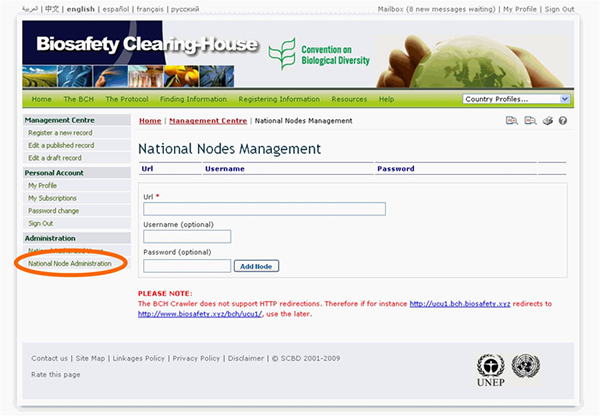

El enlace National Node Administration proporciona el acceso a una página que puede ser utilizada para solicitar la interoperabilidad entre los nodos nacionales del CIISB y el Portal Central del CIISB.

Interoperabilidad se refiere al hecho de compartir información entre un CIISB nacional de un país y el Portal Central del CIISB administrado por la Secretaría. La información que es registrada en el BCH puede automáticamente aparecer en el BCH nacional de un país mediante el uso de los Plug-In Hermes o Ajax. Las agencias gubernamentales u organizaciones que manejan información en sus propios servidores también pueden querer explorar la posibilidad de volver sus servidores interoperables con el BCH mediante el intercambio de información en formato XML. Los Puntos Focales Nacionales o administradores TI que estén interesados en esta opción pueden contactar a la Secretaría por más información.
Por más información, por favor contacte a la Secretaría.